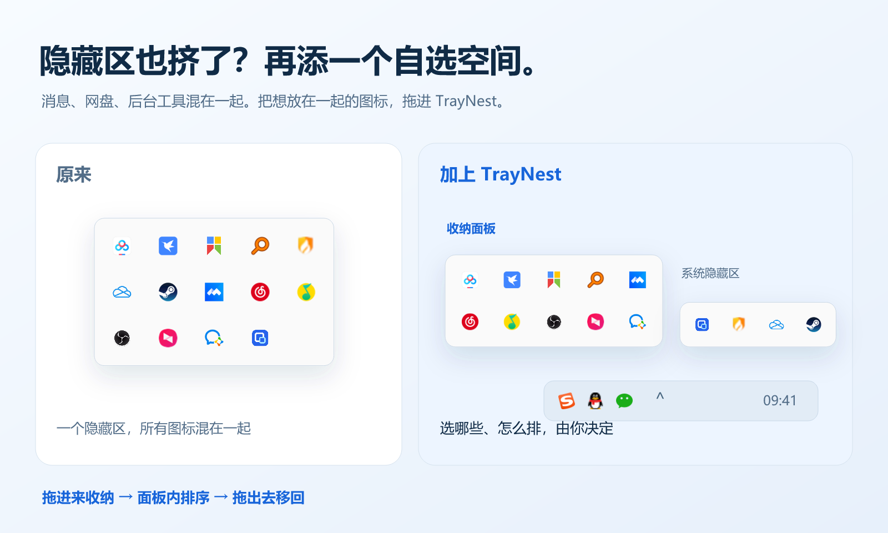

TrayNest
GitHub
如何安装
下载预览版
TrayNest · Windows 11 图标面板管理工具
可编辑 SVG ↗

同一组图标的收纳前后对比
可编辑 SVG ↗
当前生产控件演示与独立设置窗口
可编辑 SVG ↗
浅色、深色与亚克力材质示意
可编辑 SVG ↗
 TrayNest · Windows 11 图标面板管理工具可编辑 SVG ↗
TrayNest · Windows 11 图标面板管理工具可编辑 SVG ↗ TrayNest
TrayNest